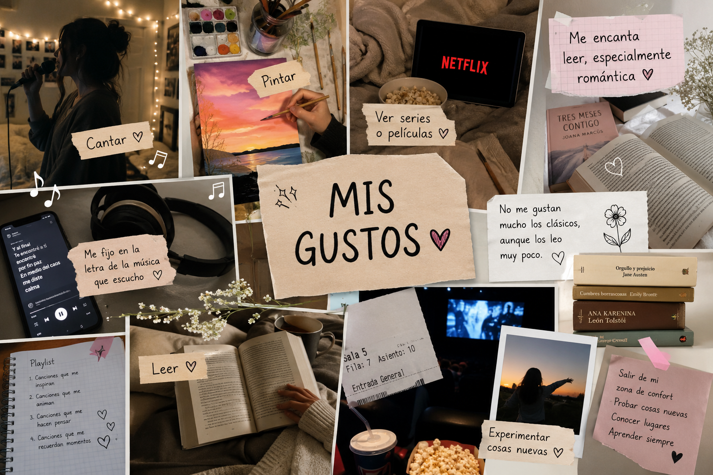

Presentación
Mis Gustos
También disfruto mucho ver series y películas en mi tiempo libre. Me gusta conocer historias diferentes, conectar con los personajes y reflexionar sobre las enseñanzas que pueden dejar.
La lectura es una de las cosas que más disfruto. Me encantan las novelas románticas porque me permiten vivir emociones intensas, conocer personajes interesantes y sumergirme en historias que despiertan mi imaginación. Aunque los libros clásicos no suelen ser mis favoritos, en ocasiones leo algunos para conocer diferentes estilos de escritura y ampliar mis conocimientos. Para mí, leer es una forma de aprender, relajarme y desconectarme por un momento de la rutina.
Además, me gusta experimentar cosas nuevas y salir de mi zona de confort. Disfruto descubrir nuevas actividades, aprender habilidades diferentes y enfrentar retos que me ayuden a crecer tanto personal como académicamente. Considero que cada experiencia, buena o mala, deja una enseñanza valiosa.
Por último, valoro mucho el tiempo que comparto con mi familia y las personas que quiero. Disfruto crear recuerdos, conversar y compartir momentos especiales que fortalecen mis relaciones y me hacen sentir feliz.
